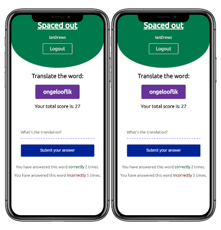
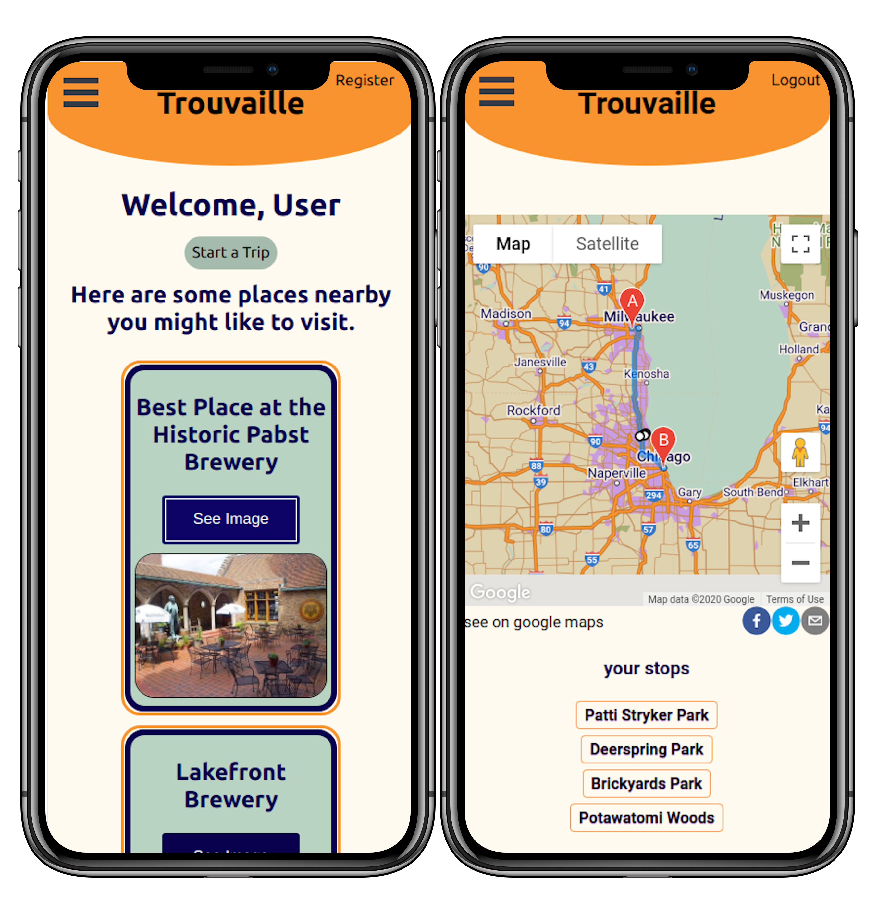
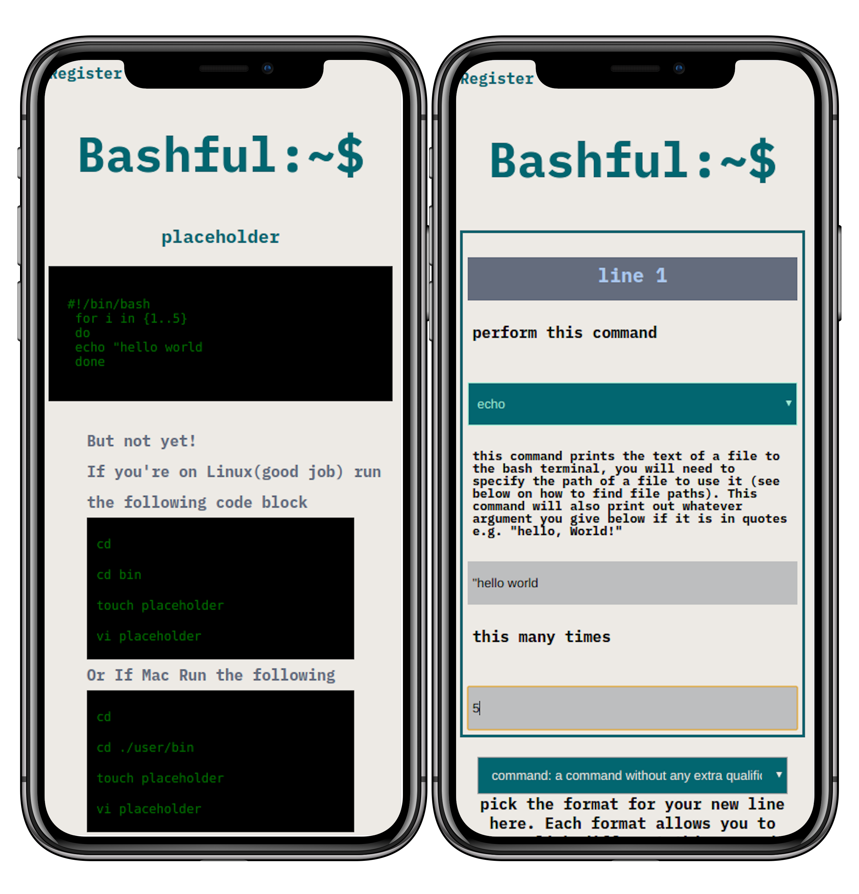

Ian Drews
About me
Hi, there I'm Ian. I refresh web pages, read documentation and occasionally even get to write code. I'm extremely excited to join a talented team of developers, so feel free to contact me.
I am experienced with React, Node, Express, PostreSQL, Sass, and Agile Development. I've created a number of full-stack web apps some of which you can see below, I'm extremely motivated and enjoy working on challenging problems and coming up with novel solutions.
When I’m not doing any of that I like playing DND, baking and watching entirely too much Television.
Things I've Made
Spaced-Out
A flashcard app for people interested in learning Afrikaans, the site uses the spaced-repetition algorithm for learning to increase the rate of learning for users. I built the app because I noticed there were essentailly no similar services for the language in question and I was interested in the concepts behind spaced-repetition.
Made with React, express, Postgresql,javascript, Node, and Sass
Tested with Mocha Chai and Jest
Trouvaille
Trouvaille is a Roadtrip planning app for users who are interested in finding interesting locations along with their trips, which uses the google directions, places, and maps APIs to present the user with a list of tourist attractions along a given route and then display a map routing out the trip, with all the stops.
Made with React, express, Postgresql,javascript, Node, Sass, and Google Api services.
Tested with Mocha Chai and Jest
Bashful
This is a simple bash script generator made with the intention of giving people who are just getting started with the concept of writing scripts a more user-friendly experience. It allows the user to create their first simple bash scripts with descriptions of each keyword and instructions on how to run them for the first time.
Made with React, express, Postgresql,javascript, Node, Sass, bcryptjs, date-fns and Jsonwebtoken.
Tested with Mocha Chai and Jest
